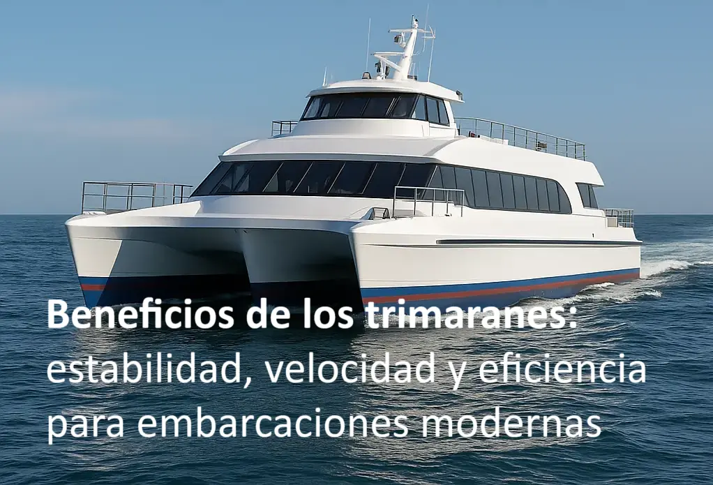

Beneficios de los trimaranes: estabilidad, velocidad y eficiencia para embarcaciones modernas
Publicado por CONAVRE | Abril 2025
Los trimaranes han revolucionado la náutica moderna gracias a su configuración de tres cascos. Originalmente diseñados para la competición de vela, hoy su adopción se extiende a aplicaciones comerciales, patrullaje y turismo. Analizaremos en profundidad cómo su arquitectura mejora la experiencia a bordo y optimiza la operación.
¿Qué es un trimarán?
Un trimarán cuenta con un casco central y dos cascos laterales (amas). Esta disposición ofrece una plataforma amplia que contrarresta el balanceo y mejora la estabilidad transversal.
Ventajas principales
1. Estabilidad excepcional
La separación entre los amas y el casco principal crea un efecto basculante mínimo:
- Reducción del rolido en hasta 90 % respecto a monocascos equivalentes.
- Mayor seguridad y confort para pasajeros y tripulación.
- Ideal para operaciones sensibles: carga, investigación y pesca industrial.
2. Velocidad y dinámica de navegación
Con tres cascos finos, el trimarán aprovecha mejor la superficie total para deslizarse:
- Velocidades de crucero superiores en 15–20 % comparado con monocascos.
- Respuesta ágil al timón, gracias al menor arrastre hidrodinámico.
3. Eficiencia de combustible y huella de carbono
Menor resistencia al avance implica ahorros reales y menor impacto ambiental:
- Consumo reducido entre 10–25 % en travesías costeras.
- Disminución directa de emisiones de CO₂, alineándose con prácticas sostenibles.
4. Confort y carga útil
El casco central amplio permite distribuir cabinas y carga de forma versátil:
- Espacios modulares para pasajeros, carga o equipos científicos.
- Menor vibración y ruido interior, gracias al soporte lateral de los amas.
5. Seguridad y redundancia
En caso de avería en un casco lateral, los otros dos mantienen la flotabilidad:
- Mayor capacidad de supervivencia en situaciones de emergencia.
- Facilita maniobras de rescate y asistencia en mar abierto.
Comparativa: monocasco vs. catamarán vs. trimarán
Cada arquitectura tiene sus puntos fuertes. A continuación, un contraste detallado:
| Característica | Monocasco | Catamarán | Trimarán |
|---|---|---|---|
| Estabilidad | Media | Alta | Muy alta |
| Velocidad | Media | Alta | Más alta |
| Consumo | Alto | Medio | Bajo |
| Espacio interior | Limitado | Amplitud lateral | Amplitud central máxima |
| Coste inicial | Bajo–medio | Medio–alto | Alto |
El trimarán combina lo mejor de ambos mundos: la velocidad y estabilidad del catamarán con la ampliación de espacio y redundancia a bordo.
Aspectos técnicos de diseño y construcción
- Precisión en la fabricación del molde maestro: garantiza simetría y alineación perfecta de los tres cascos.
- Instalación de refuerzos transversales y acoples: une firmemente el casco central con los amas para distribuir cargas.
- Fairing del casco: esmaltado y pulido para minimizar turbulencias y arrastre.
- Análisis estructural: cálculo manual de esfuerzos y deformaciones en puntos críticos para dimensionar refuerzos.
Mantenimiento y ciclo de vida
Un buen plan de mantenimiento maximiza la durabilidad:
- Inspección anual de uniones y acoples.
- Revisión de gelcoat y pintura cada 2 años.
- Calibración de sistemas de propulsión cada temporada.
Con un mantenimiento adecuado, un trimarán puede operar eficientemente durante 20–25 años.
Dato curioso: Surface Effect Ship
El Surface Effect Ship emplea una cámara de aire entre cascos para reducir aún más la resistencia, logrando velocidades superiores a 50 nudos en modelos experimentales.
Preguntas frecuentes
¿Por qué un trimarán es más estable que un monocasco?
La amplitud de sus tres cascos reduce el balanceo y el rolido incluso en condiciones exigentes.
¿Cómo disminuye el consumo de combustible?
Gracias a su menor resistencia al avance, requiere menos potencia y, por ende, menos combustible.
¿Son más costosos de fabricar?
El coste inicial es mayor por los moldes y la complejidad, pero se amortiza con ahorros operativos.
Ver caso de éxito: Doña Helena
Conoce nuestro proyecto Doña Helena, un trimarán de 15 m diseñado para turismo de altura, que ilustra todas estas ventajas en operación real.
¿Te interesa un trimarán a medida? Solicita tu cotización o explora nuestro portafolio.
← Volver al Blog